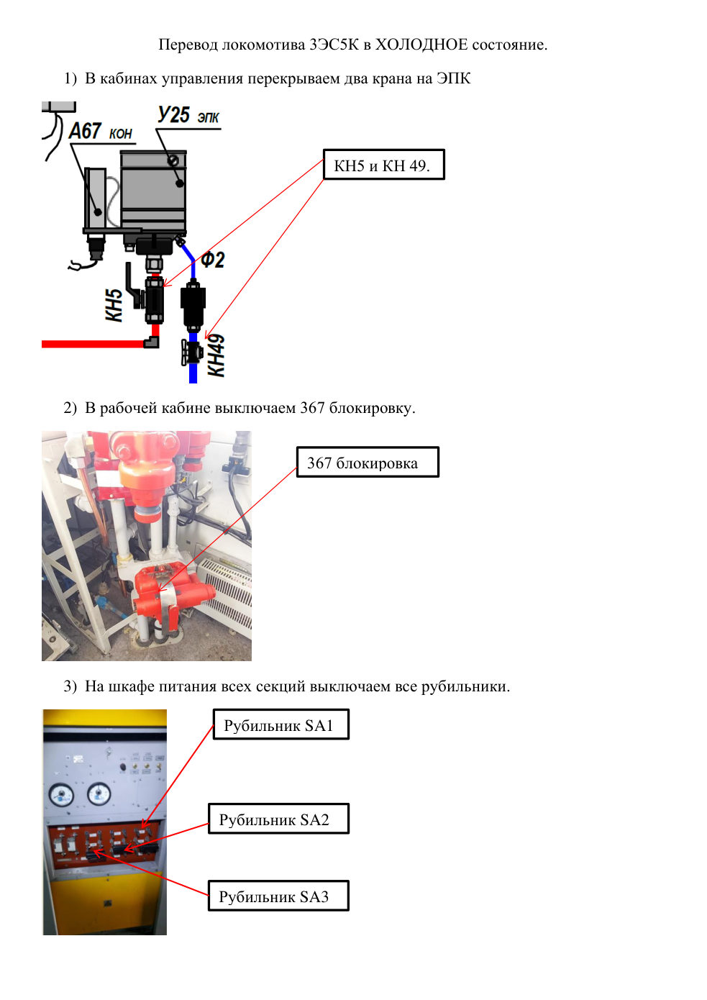

Найти неисправность
Поиск по признакам, системам и сообщениям. Сохраняйте наблюдения по каждой секции.
Быстрый доступ
Каталог неисправностей
3D-модель электровоза
Объёмная модель GLB
Можно вращать, приближать и переключать наружный вид / условный разрез. Геометрия создана для демонстрации и не соответствует точной компоновке оборудования.
Фотографии настоящих аппаратов
Иллюстрации из предоставленного документа «Перевод локомотива 3ЭС5К в холодное состояние». Нажми на страницу, чтобы увеличить. Операции в источнике не подтверждены для всех исполнений.

Это фотографический справочник, а не проверенная интерактивная компоновка.
Учебная анимация рукоятки крана
Обобщённая демонстрация движения рукоятки, не инструкция по управлению конкретным краном 3ЭС5К.
Обзор секций
Интерактивная обзорная схема (не 3D и не монтажная схема). Выберите секцию.
Выберите секцию
Нажмите на А, Б или В на схеме.
Узлы и системы
Журнал наблюдений
Новая запись
Документация и настройки
📚 Проверенная карта документации
Руководство ИДМБ.661142.009РЭ (3ТС.001.012РЭ). Выберите книгу по системе. Публикации доступны онлайн; редакцию для конкретного номера необходимо сверять.
Книги относятся к описанным в них исполнениям; нельзя автоматически переносить схемы 2004 года на все выпуски.
🧭 Алгоритм поиска неисправности
1. Запишите номер электровоза, секцию, исполнение МСУД и точное сообщение диагностики.
2. Найдите систему в каталоге и откройте соответствующую книгу руководства.
3. Сверьте аппарат и его обозначение с компоновкой и схемой именно этого исполнения.
4. Выполняйте только разрешённые локомотивной бригаде действия по действующим инструкциям. При отсутствии подтверждённого алгоритма не экспериментируйте с защитами, высоковольтными цепями и тормозами.
5. Сохраните наблюдения в журнале.
📄 Пособие по неисправностям
Альбом-пособие 3ЭС5К (2ЭС5К), Белогорск, 2019 ↗
Дополнительный источник, не заменяет действующие инструкции и проверку применимости к конкретной машине.
🎮 Внешняя 3D-модель для просмотра
Посмотреть модель 3ЭС5К на Sketchfab ↗
Это сторонняя внешняя модель, не встроенная в приложение. Лицензия на использование и точность внутреннего оборудования не подтверждены.
Исполнение электровоза
Номер и система управления сохраняются на устройстве. Автоматического определения комплектации по номеру пока нет.
Документы для сверки
Справочные ссылки на материалы по 2ЭС5К/3ЭС5К. Перед использованием проверяйте номер локомотива, редакцию, исполнение системы управления и местные инструкции.
Руководство по эксплуатации — оглавление ↗
Перечень эксплуатационных книг ↗
Ссылки требуют интернета. Сами книги не включены в приложение.
Внешний вид
Статус справочника
Журнал хранится локально. Экспортируйте резервную копию перед очисткой браузера или сменой телефона.